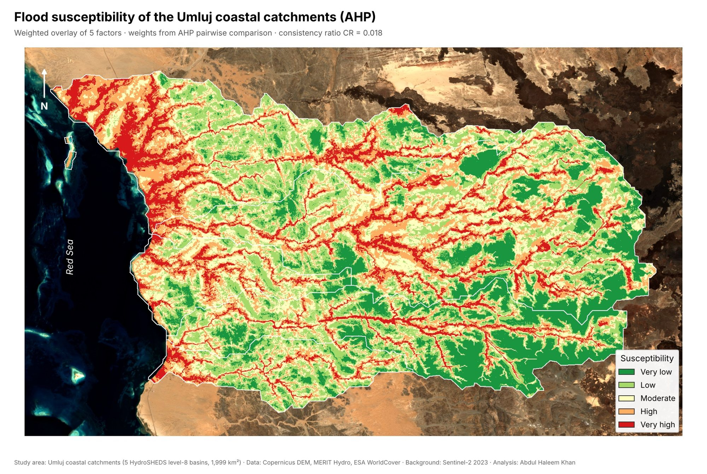
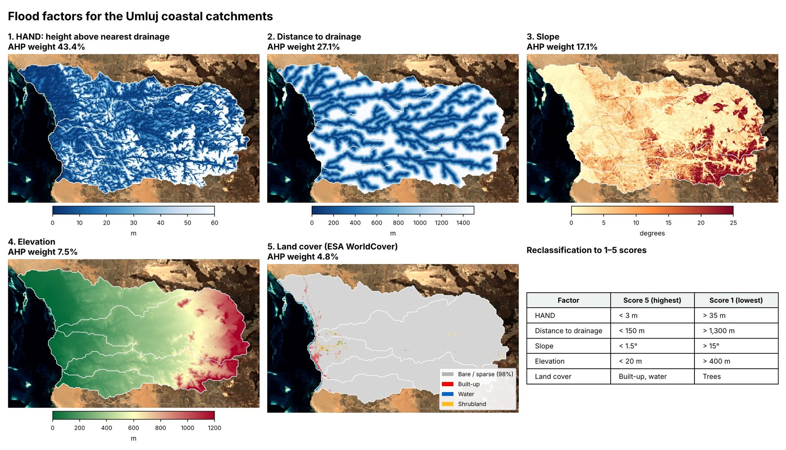
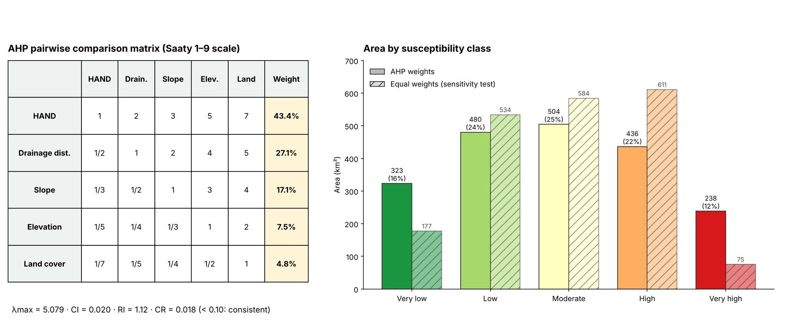
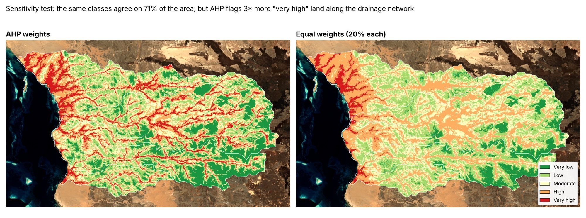

Flood Susceptibility with AHP: Umluj Coastal Catchments (Google Earth Engine)
Flood susceptibility map of the Umluj coastal catchments built with the Analytic Hierarchy Process (AHP): five factors weighted by pairwise comparison (CR = 0.018), combined in Google Earth Engine from open global data, with a sensitivity test against equal weights.
- Location
- Umluj city and surroundings, Saudi Arabia
- Year
- 2025 project · AHP extension 2026
- Client
- Based on my project for Sadeem International Company, Saudi Arabia (5.0★ review)
- Tools
- Google Earth Engine (JavaScript), AHP, MCDA, MERIT Hydro HAND, Copernicus DEM, ESA WorldCover








Challenge
Purpose of the original 2025 project for Sadeem International Company: an environmental assessment to decide where to install flood sensors around Umluj. That map combined flood factors in a weighted overlay. Weights chosen by judgement are hard to defend, so I rebuilt the analysis with the Analytic Hierarchy Process (AHP). It gives every weight a documented pairwise comparison and a consistency check, and the whole model runs from open global data that anyone can reproduce.
Approach
- Delineated the study area from HydroSHEDS level-8 basins, so it follows real catchments rather than an arbitrary box
- Derived five flood factors: HAND, distance to drainage, slope, elevation and land cover
- Reclassified each factor to a 1–5 susceptibility score with breaks set from its distribution in the study area (for example HAND under 3 m = 5, over 35 m = 1)
- Built the AHP pairwise comparison matrix on Saaty's 1–9 scale and derived the weights: HAND 43.4%, distance to drainage 27.1%, slope 17.1%, elevation 7.5%, land cover 4.8%
- Checked consistency: λmax 5.079, CI 0.020, CR 0.018, well below the 0.10 limit
- Combined the factors in a weighted overlay and classified the index into five classes, from very low to very high
- Ran a sensitivity test with equal weights, measured built-up exposure with WorldCover, and set up 30 m GeoTIFF and shapefile exports
Results
- Very high susceptibility covers 238 km² (12%) and high 436 km² (22%), concentrated along the wadi network and the low coastal plain around Umluj
- 68% of built-up land in the catchments (10.9 of 16.1 km²) falls in the high or very high classes
- Sensitivity: AHP and equal weights give the same class for 71% of the area, but AHP identifies about 3× more very-high land (238 vs 75 km²) along the drainage lines, where flash floods actually run
- Consistent with the original client map: wadi channels and the coastal plain are the highest-risk zones, and the elevated eastern ground is lowest